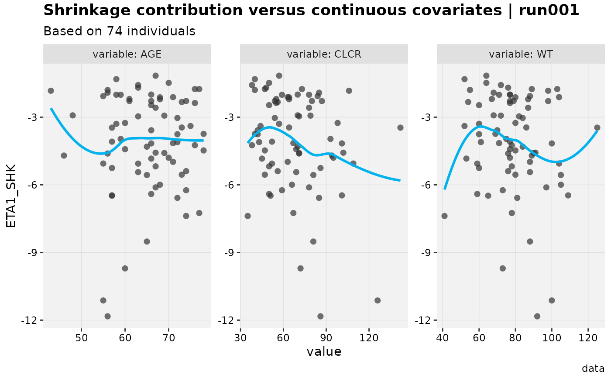
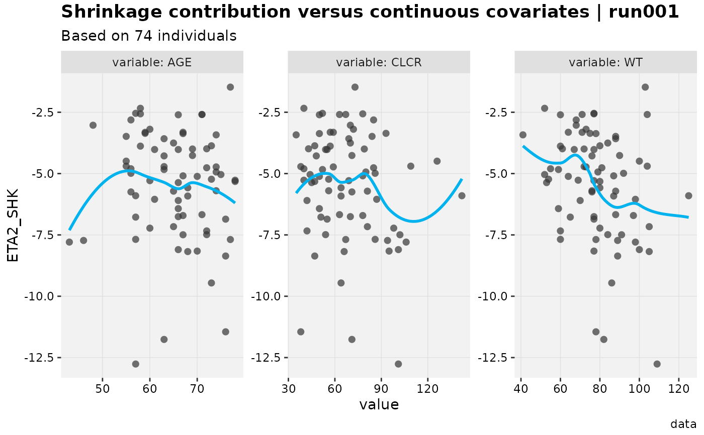
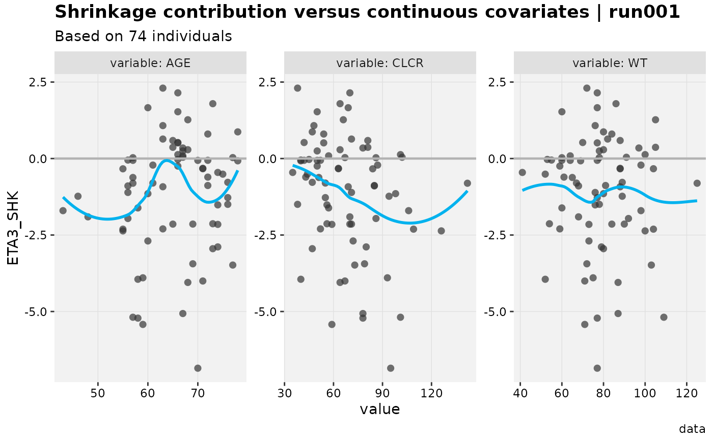
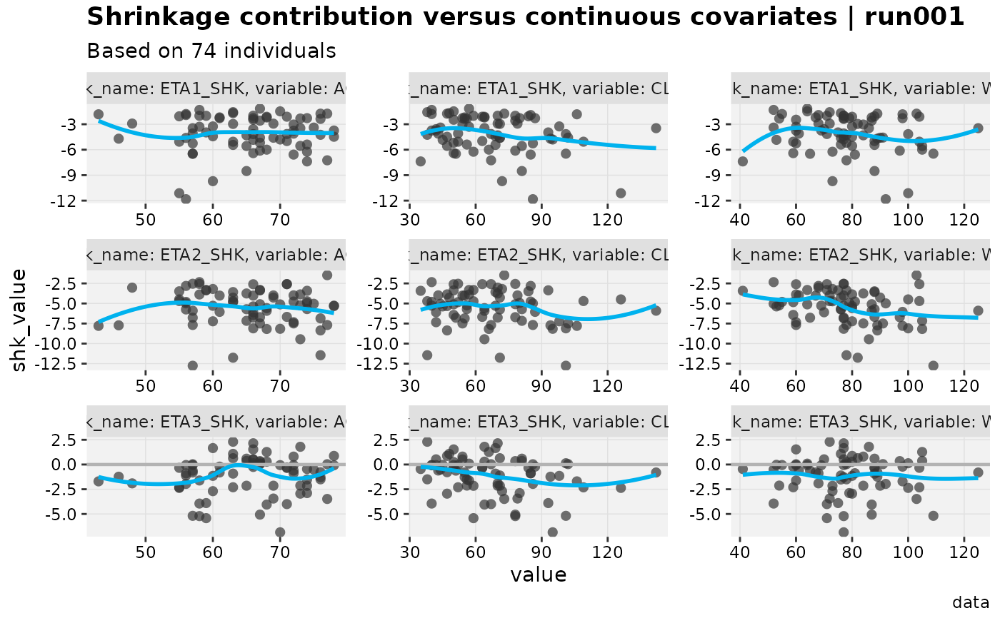

Mirrors eta_vs_contcov(), but for the per-individual shrinkage
contribution diagnostic (shk type columns, see
derive_shk()/backfill_shk()) instead of the etas themselves.
Usage
shk_vs_contcov(
xpdb,
mapping = NULL,
shkvar = NULL,
covvar = NULL,
drop_fixed = TRUE,
linsm = FALSE,
type = "ps",
list = TRUE,
title = "Shrinkage contribution versus continuous covariates | @run",
subtitle = "Based on @nind individuals",
caption = "@dir",
tag = NULL,
log = NULL,
guide = TRUE,
facets,
.problem,
quiet,
...
)Arguments
- xpdb
<
xp_xtras> or <xpose_data> object- mapping
ggplot2style mapping- shkvar
tidyselectforshkvariables- covvar
tidyselectfor continuous covariate variables;NULL(default) selects every continuous covariate in thexpdbdata index.- drop_fixed
As in
xpose- linsm
If
typecontains "s" should the smooth method bylm?- type
Passed to
xplot_scatter- list
<
logical> Only relevant whenshkvarresolves to more than oneshkcolumn. IfTRUE(default, for backwards compatibility), returns a plain list of one plot pershkcolumn. IfFALSE, they are instead combined onto one shared plot – faceted byshkcolumn, in addition to the existing per-covariate facet – automatically paginating (at most 9 panels per page, i.e.ncol/nrowof 3) viaxpose's ownfacet_wrap_paginatemechanism. Printing the returned plot renders every page; passpagetoprint()to select a specific one.- title
Plot title
- subtitle
Plot subtitle
- caption
Plot caption
- tag
Plot tag
- log
Log scale covariate value?
- guide
Add guide line?
- facets
Additional facets
- .problem
Problem number
- quiet
Silence output
- ...
Any additional aesthetics.
Value
The desired plot, or (when shkvar resolves to more than one
shk column and list = TRUE) a plain list of one plot per column.
Examples
# \donttest{
xpdb_x %>%
backfill_shk() %>%
shk_vs_contcov()
#> Using data from $prob no.1
#> Removing duplicated rows based on: ID
#> Tidying data by ID, SEX, MED1, MED2, DOSE ... and 26 more variables
#> Using data from $prob no.1
#> Removing duplicated rows based on: ID
#> Tidying data by ID, SEX, MED1, MED2, DOSE ... and 26 more variables
#> Using data from $prob no.1
#> Removing duplicated rows based on: ID
#> Tidying data by ID, SEX, MED1, MED2, DOSE ... and 26 more variables
#> [[1]]
#> `geom_smooth()` using formula = 'y ~ x'

#>
#> [[2]]
#> `geom_smooth()` using formula = 'y ~ x'

#>
#> [[3]]
#> `geom_smooth()` using formula = 'y ~ x'

#>
# Combine all shk columns onto one shared, faceted plot instead of a list
xpdb_x %>%
backfill_shk() %>%
shk_vs_contcov(list = FALSE)
#> Using data from $prob no.1
#> Removing duplicated rows based on: ID
#> Tidying data by ID, SEX, MED1, MED2, DOSE ... and 26 more variables
#> `geom_smooth()` using formula = 'y ~ x'

# }